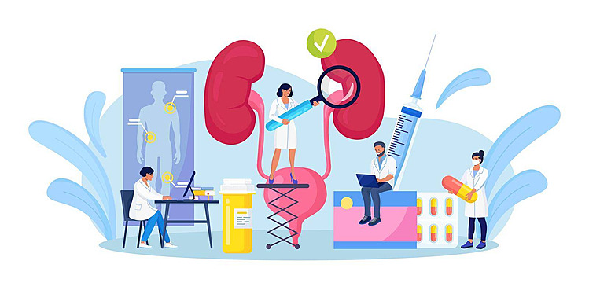

Chronic kidney disease (CKD) is the 16th leading cause of years of life lost worldwide. Appropriate screening, diagnosis, and management by primary care clinicians are necessary to prevent adverse
CKD-associated
outcomes, including cardiovascular disease, end-stage kidney disease, and death.
Understanding Kidney Health: A Vital Part of Your WellBeing
The kidneys are essential organs that play a crucial role in maintaining your overall health. They work tirelessly to filter waste and toxins from your blood, balance your body's fluids, regulate blood pressure, and produce vital hormones. However, kidney health is often overlooked until problems arise. It's important to be aware of the signs of kidney disease, such as changes in urination,
Isad in better outomes. By adoptng a widaey thenaty
lifestyle-through proper diet, regular exercise, staying hydrated, and avoiding excessive use of painkillers-you can significantly reduce your risk of kidney disease.
Regular check-ups
and screenings
are also key in
catching any potential issues early. Remember, taking care of your kidneys is not just about protecting one organ; it's about ensuring your whole body remains healthy and functioning well.
Read More

How Meditation Reduces Stress and Protects Kidney - HealthMeditation is a powerful tool for managing stress,
which is
crucial for
maintaining
healthy kidneys.
Chronic stress can lead to high blood pressure, a major risk factor
can lower their stress levels, helping to keep their blood pressure under control. Readmore
How Meditation Reduces Stress and Protects Kidney - HealthMeditation is a powerful tool for managing stress,
which is crucial for
maintaining
healthy kidneys.
Chronic stress can lead to high blood pressure, a major risk factor for kidney disease. By practicing meditation regularly, individuals can lower their stress levels, helping to keep their blood pressure under control. Readmore
How Meditation Reduces Stress and Protects Kidney - HealthMeditation is a powerful tool for managing stress,
which is
crucial for
maintaining
healthy kidneys.
Chronic stress can lead to high blood pressure, a major risk factor for kidney disasey, Preticing can lower their stress levels, helping to keep their blood pressure under control. Readmore